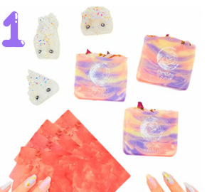
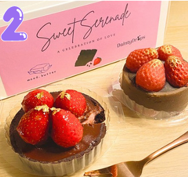
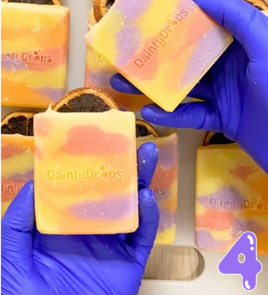

Tentang DaintyDrops
DaintyDrops adalah handmade dessert soap unik dengan desain lucu seperti makanan, tapi ini bukan untuk dimakan ❤️ cocok untuk hadiah, koleksi, atau self-care kamu.
Lihat Produk →.jpeg)
DaintyDrops adalah handmade dessert soap unik dengan desain lucu seperti makanan, tapi ini bukan untuk dimakan ❤️ cocok untuk hadiah, koleksi, atau self-care kamu.
Lihat Produk →

Didirikan pada tahun 2020, DaintyDrops adalah brand handmade dessert soap yang menghadirkan pengalaman mandi yang unik dan menyenangkan.
Special Edition Package
Dessert Soap
LipBalm Workshop
Hampers/Gift Box
Custom Order
Worksoap
Founder mulai belajar membuat sabun handmade.
DaintyDrops resmi diluncurkan sebagai brand.
Mulai fokus ke hampers & gift box.
Mulai menerima banyak custom order & berkembang.





Founder Story
Passion dalam menciptakan sabun dengan bentuk unik bermula dari ketertarikannya pada sebuah brand artisan soap dan bath bomb yang sering ia kunjungi saat masa kuliah di Australia sekitar tahun 2015–2016.
Merasa bahwa bergantung pada jasa titip (jastip) terlalu merepotkan, ia pun memutuskan untuk mencoba membuat versinya sendiri setelah kembali ke Jakarta pada tahun 2017.
Pandemi kemudian mengubah arah perjalanan bisnisnya, di mana hampers menjadi tren baru di tengah masyarakat.
Di sisi lain, diagnosis penyakit autoimun yang ia terima pada tahun 2021—yang membuatnya tidak lagi dapat menikmati dessert favoritnya—justru menjadi sumber inspirasi baru.
Sejak saat itu, ia terus menghadirkan berbagai konsep sabun berbentuk dessert yang unik setiap harinya, menjadikan setiap produk DaintyDrops bukan hanya sekadar sabun, tetapi juga sebuah karya penuh makna.